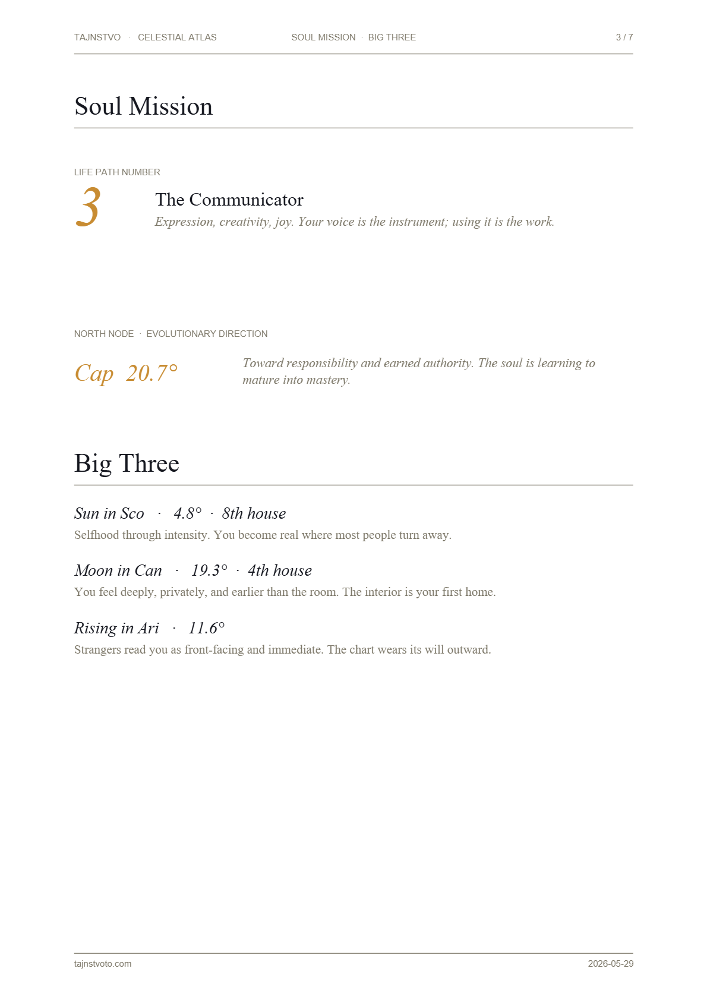

Natal Chart
Modern Western tropical reading covering Sun, Moon, Rising, key placements, and life themes.
A detailed written reading of your soul mission, karmic patterns, gifts, and shadows — drawn from your exact birth chart and numerology, delivered as an instant PDF in about two minutes.
All the tools below are free to explore — chart wheel, transits, astrocartography, oracles, frequencies. The personalized written report is $15.
Every report is computed live from your exact birth data — no two are alike.

Four oracles. Two maps. Two rituals. Each its own register.
Modern Western tropical reading covering Sun, Moon, Rising, key placements, and life themes.
Today's planetary weather translated into personal energy, love, career, and a closing note.
Compatibility across chemistry, communication, emotional bond, and friction — closes with a score.
Ptolemy, Vettius Valens, Dorotheus — whole‑sign houses, sect, lots of Fortune and Spirit, profections.
Cast the chart across Earth. MC / AC solid, IC / DC dashed. Toggle per‑planet line groups.
Today's sky vs natal. Five‑aspect detection, retrograde flags, an AI‑narrated weekly reading.
Choose which lines matter. Ask the Oracle where on Earth they fall most kindly. By region.
Six celestial themes. The Oracle composes a script; the device speaks while a breathing orb keeps cosmic time.
Folk divination by molten lead. A three‑step ritual; an animated parametric blob morphs through ten archetypal forms — Bird, Hand, Serpent, Heart, Ship, Tree, Moon, Wolf, Cross, Mountains. On Stop, the lead trembles, cracks, and cools.
Schlyter's simplified planetary formulas. ±1° accuracy, 1900–2100. No server round‑trips.
Every chart-driven feature draws from one in‑browser engine. Julian Day from Gregorian calendar; Greenwich Mean Sidereal Time; Newton‑Raphson Kepler solver across 6–8 iterations; heliocentric Cartesian coordinates from orbital elements (N, i, ω, a, e, M); ecliptic‑to‑equatorial rotation with secular obliquity term.
From these primitives the engine derives astrocartography line projection, aspect angular separation against five canonical orbs, and retrograde detection by 24‑hour ecliptic longitude differential.
λ = α − θ
RISE/SET / H
cos H = −tan φ · tan δ
| Aspect | Angle | Orb | Quality |
|---|---|---|---|
| Conjunction | 0° | 6° | Neutral |
| Sextile | 60° | 4° | Soft |
| Square | 90° | 5° | Hard |
| Trine | 120° | 5° | Soft |
| Opposition | 180° | 6° | Hard |
Your chart cast across the Earth. Where each planet asks to be lived through.
A live sample for today — natal vs. sky.
Mars trine your natal Sun gives the week its accelerant — a window where ambition and identity move together rather than at odds. Begin what you have been hesitating over; the sky is unusually willing.
Saturn square the Moon is the week's friction. An emotional structure you have been deferring asks to be looked at. Not a punishment — an audit. Sit with the discomfort long enough to name what the structure was protecting.
Mercury retrograde opposite Saturn invites a slow, careful conversation rather than a fast one. Send the long email. Re‑read the contract. The sky rewards revision this week, not announcement.
Two practices the screen does not merely describe — it performs.
What do you bring to the lead?
Three breaths. The body settles before the lead is poured.
Speak what you have not said.
Who reads the lead reads the heart.
— A FOLK SAYING
THE READING
Solfeggio and high-frequency tones, generated live in your browser. Click any frequency to begin; click again to stop. Multiple may run together.
EXPERIMENTAL
The Frequency Reader measures your live energetic state from a camera pulse reading and your voice — entirely in your browser. Moved to its own room to keep this page focused.
A guided arc through the next six weeks of your sky. Each day surfaces the day's strongest transit and pairs it with a theme, a single action, and a reflection.
Six weeks. One card a day. Anchored in your real transits.
The program reads your birth chart and the calendar above it, picks the strongest transit aspect each day, and renders a card you can sit with: a frame for the day, a small action, a question to carry. It runs in your browser; once started it persists across reloads.
SAVE YOUR BIRTH PROFILE ABOVE FIRST · GENERATE A REPORT TO CACHE THE CHART
—
The things worth knowing before you generate your report.
A multi-page, print-ready PDF built from your exact birth data: your Big Three, Soul Mission, full numerology (Life Path, Expression, Soul Urge, Personality, Birthday), karmic patterns and shadows, gifts across relationships / career / finances, a natal chart wheel, your astrocartography lines, and the day's transits. No two reports are alike.
Instant. You enter your details, pay through Stripe, and the PDF generates and downloads in your browser within a minute or two. There is no human in the loop and no waiting period.
Planetary positions are computed with Paul Schlyter's simplified formulas — accurate to roughly ±1° across the years 1900–2100, the same order of precision used by professional chart software. Houses use the whole-sign system.
It helps a great deal. Your Rising sign and house placements depend on the time and place. If you don't know it, the planetary signs and the numerology are still exact — only the Rising sign and houses become approximate.
Your chart is computed entirely inside your browser — your birth details are never sent to or stored on a server. Payment is handled by Stripe; we never see your card. The free Frequency Reader's camera and microphone streams are released the instant a reading ends.
Every interactive tool on this page is free to explore — the chart wheel, transits, astrocartography, the four oracles, and the healing frequencies. Only the downloadable written Soul Report ($15) and the Star Map poster ($9) are paid.
Because each report is an instant digital download generated uniquely for you, sales are final. But if anything fails to generate correctly, write to us and we will make it right.
A print-ready A4 PDF you can keep, print, frame, or share. It opens on any device.
WHO MADE THIS
Tajnstvo — Old Church Slavonic for the mystery — began as an obsession with two traditions that rarely meet: the precise, ancient mathematics of Hellenistic astrology, and the folk divination practised in my family with molten lead. I built the astronomical engine from scratch so every chart is honest math rather than a lookup table, and wrote every interpretation by hand.
There is no call centre and no upsell funnel here — just one carefully made report, generated the moment you ask for it.
— THE MAKER OF TAJNSTVO